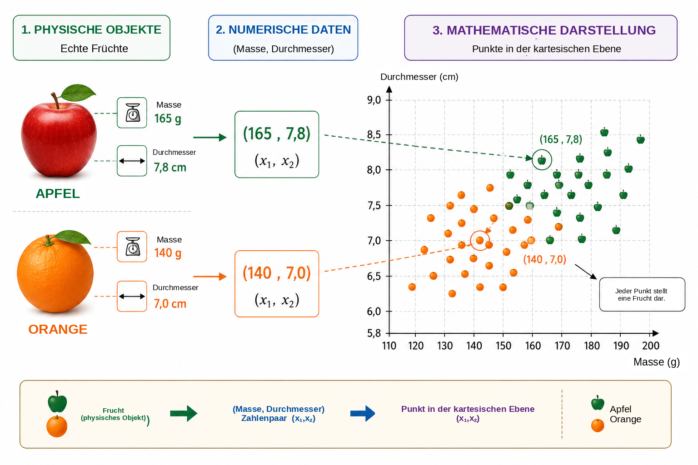
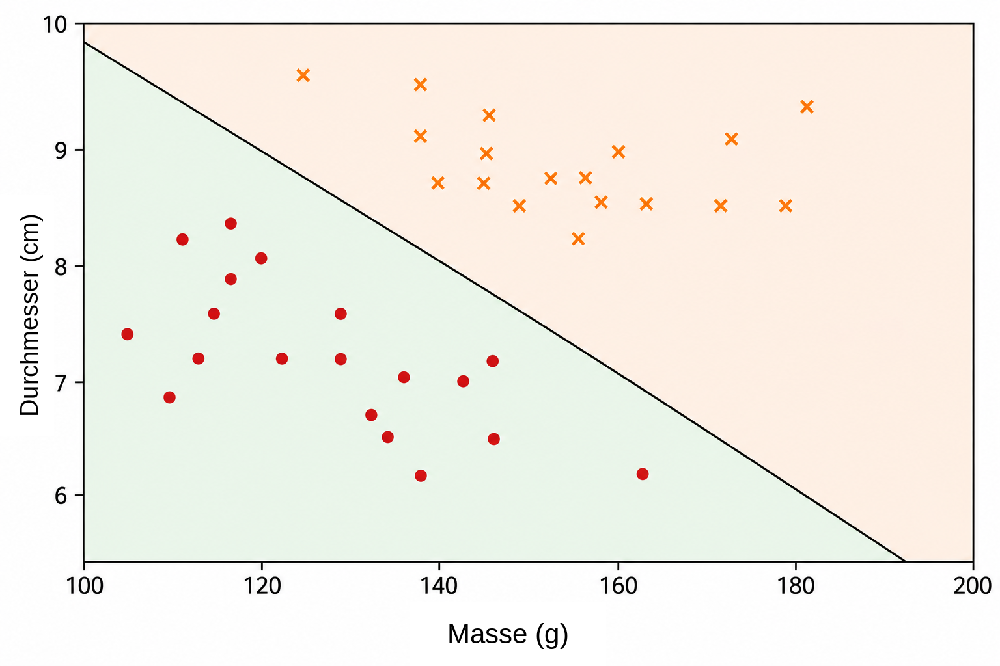
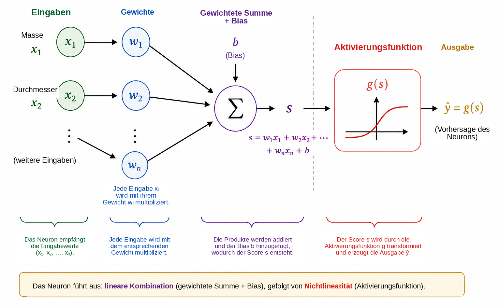
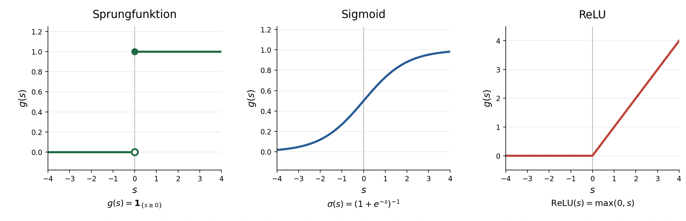
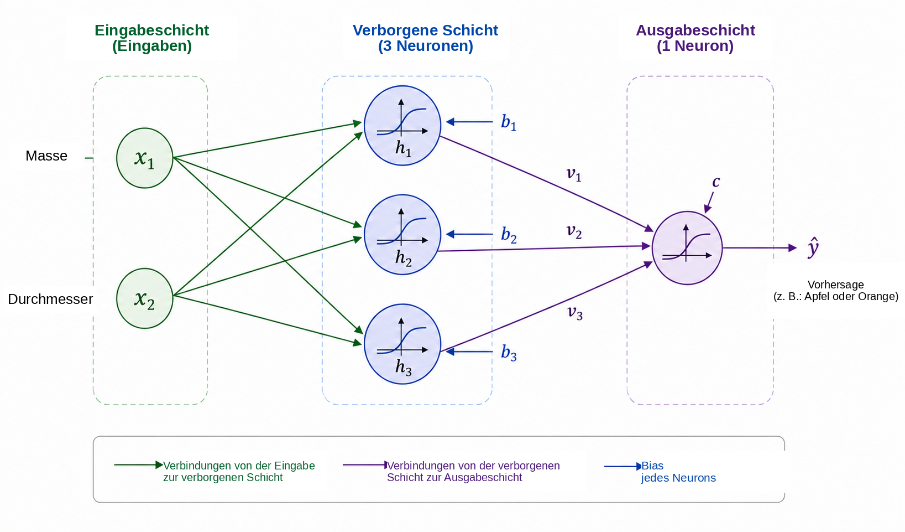
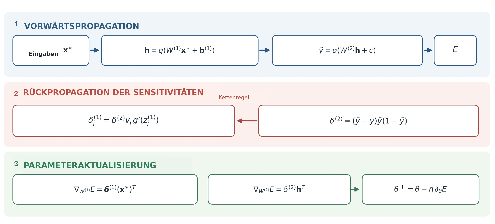
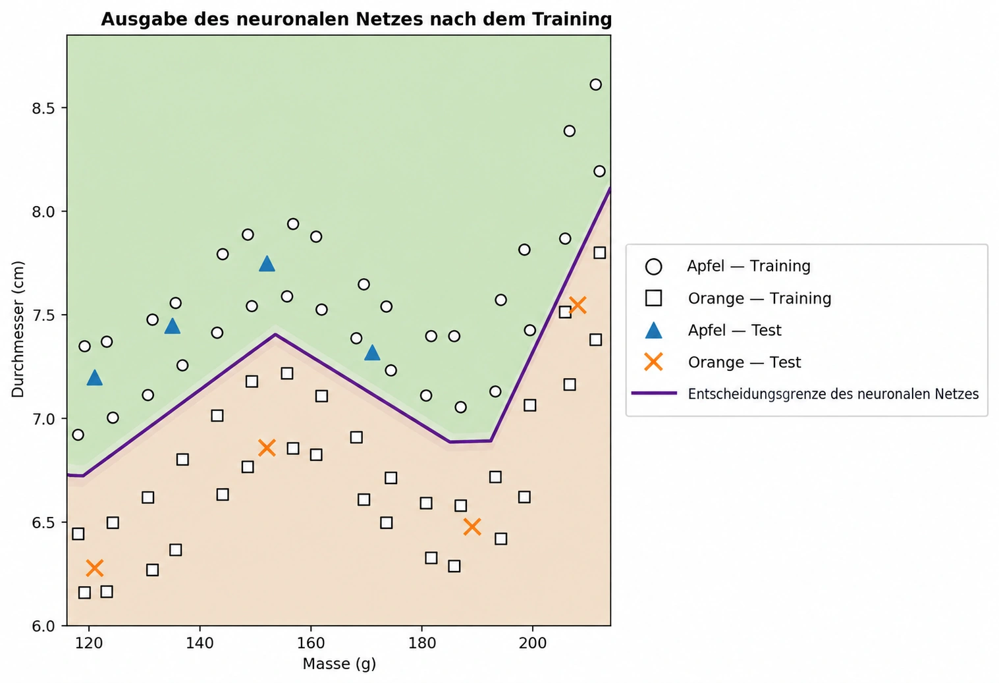
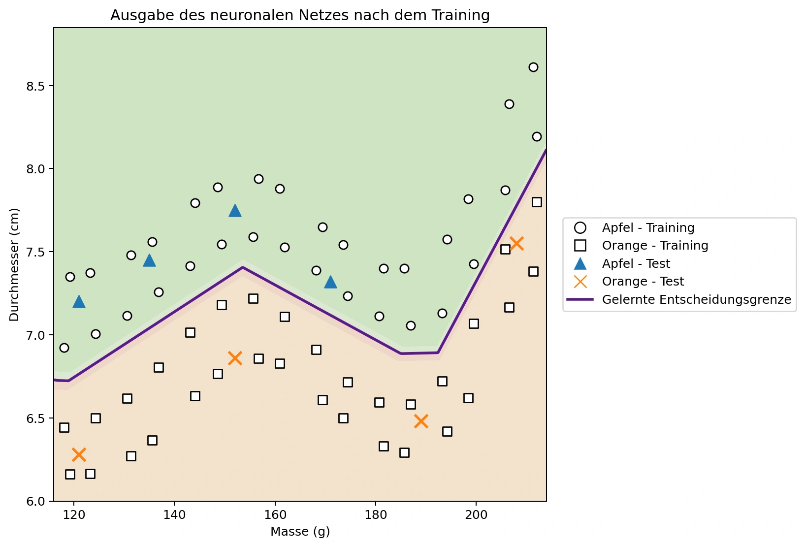

Wann kann ein Computer lernen?
Im Alltag treffen wir Klassifikationsentscheidungen fast ohne es zu bemerken. Beim Betrachten einer Frucht erkennen wir schnell, ob es sich um einen Apfel oder eine Orange handelt; wenn eine Nachricht auf dem Telefon eingeht, unterscheiden wir eine legitime Unterhaltung von unerwünschter Werbung; in der medizinischen Analyse können mehrere Messgrößen kombiniert werden, um eine Entscheidung zu unterstützen; und in Finanzinstituten werden zahlreiche Informationen ausgewertet, bevor ein Kredit gewährt wird. In all diesen Beispielen werden mehrere Merkmale gemeinsam betrachtet, um eine Antwort zu erzeugen.
In vielen traditionellen Computerprogrammen werden die Regeln, die zu dieser Antwort führen, vom Programmierer ausdrücklich vorgegeben. Dieser Ansatz funktioniert gut, wenn die Regeln bekannt sind und klar formuliert werden können. Er wird weniger wirksam, wenn die Daten stark variieren oder wenn es schwierig ist, im Voraus jede Bedingung zu formulieren, die für eine gute Entscheidung erforderlich ist. Daraus ergibt sich eine natürliche Frage:
Können wir ein Programm konstruieren, das eine Entscheidungsregel
aus
Beispielen lernt, anstatt die Regel im Voraus zu erhalten?
Dies ist eine der zentralen Ideen des maschinellen Lernens, eines Teilgebiets der künstlichen Intelligenz, das sich mit Verfahren beschäftigt, die Modelle aus Daten anpassen . Bei einem Problem des überwachten Lernens erhält der Algorithmus Beispiele zusammen mit den korrekten Antworten, und wir suchen ein Modell, das auch für Fälle sinnvolle Vorhersagen liefern kann, die beim Training nicht verwendet wurden. Unter den zahlreichen zu diesem Zweck entwickelten Modellen haben künstliche neuronale Netze große Bedeutung in Anwendungen wie Bilderkennung, Sprachverarbeitung, Signalanalyse und Zeitreihenprognose erlangt .
Die Verwendung neuronaler Netze als Brücke zwischen Mathematik, Informatik und schulischer Bildung wurde in Professor de Matemática Online bereits von Batista und Martins diskutiert; dort wird eine Aktivität zur Lehrkräftebildung mit Python und Ziffernerkennung vorgestellt. Der vorliegende Beitrag verfolgt einen ergänzenden Weg. Unser Hauptziel besteht darin, die innere Mathematik eines kleinen neuronalen Netzes offenzulegen, beginnend mit analytischer Geometrie und schrittweise fortschreitend bis zur Gradientenberechnung und zu einer manuellen Implementierung der Rückpropagation.
Trotz der Komplexität moderner Anwendungen lässt sich der mathematische Kern eines neuronalen Netzes mit vergleichsweise vertrauten Ideen einführen. Grundsätzlich ist ein neuronales Netz eine Verkettung von Funktionen, deren Parameter anhand von Daten angepasst werden. Wir beginnen mit einem einfachen geometrischen Problem, interpretieren eine Trennlinie als künstliches Neuron neu, verbinden mehrere Neuronen, untersuchen die Rolle von Aktivierungsfunktionen und zeigen, wie Ableitungen zur automatischen Anpassung der Netzparameter verwendet werden können. Anschließend implementieren wir ein vollständiges kleines Beispiel in Python und halten dabei eine direkte Entsprechung zwischen den Gleichungen und dem Code aufrecht.
Mathematische Darstellung des Problems
Um zu verstehen, wie ein neuronales Netz funktioniert, beginnen wir mit einem bewusst einfachen Problem: Äpfel von Orangen zu unterscheiden. Eine Frucht besitzt viele Merkmale, die für diese Aufgabe nützlich sein könnten, etwa Farbe, Masse, Durchmesser, Textur und Aroma. Ein erstes mathematisches Modell muss jedoch nicht diese gesamte Komplexität berücksichtigen. Wir verwenden nur zwei leicht messbare Größen: die Masse in Gramm und den Durchmesser in Zentimetern.
Jede Frucht wird daher durch ein geordnetes Paar dargestellt, \[(x_1,x_2),\] wobei \[x_1=\text{Masse} \qquad\text{und}\qquad x_2=\text{Durchmesser}.\]
Das Paar \((155,\;7.2)\) repräsentiert somit eine Frucht mit einer Masse von \(155\) g und einem Durchmesser von \(7.2\) cm. Indem wir das physische Objekt durch zwei numerische Messwerte ersetzen, ordnen wir jeder Frucht einen Punkt in der kartesischen Ebene zu: Die erste Koordinate gibt ihre Masse, die zweite ihren Durchmesser an. Abbildung 1 veranschaulicht diese Darstellung für eine hypothetische Menge von Äpfeln und Orangen.

Diese Transformation verändert den scheinbaren Charakter des Problems. Anstatt direkt zu fragen, wie man einen Apfel oder eine Orange erkennt, können wir eine geometrische Frage stellen: Wie lassen sich die zu den beiden Klassen gehörenden Punkte in der Ebene trennen? Dieser Perspektivwechsel ist im maschinellen Lernen grundlegend. Bilder, Texte, Klänge und experimentelle Signale müssen in numerische Darstellungen umgewandelt werden, bevor ein Algorithmus sie verarbeiten kann. In unserem Beispiel besitzt jedes Objekt nur zwei Koordinaten; in realen Anwendungen kann eine Darstellung Hunderte, Tausende oder sogar Millionen von Komponenten enthalten. Das Prinzip bleibt dasselbe: Jedem Beispiel wird eine Sammlung von Zahlen zugeordnet, und das Modell sucht eine Regel, die diese Darstellung auf die gewünschte Antwort abbildet.
Wir beginnen mit der einfachsten verfügbaren geometrischen Regel und fragen, ob eine einzige Gerade die Apfelpunkte hinreichend von den Orangenpunkten trennen kann.
Eine Gerade als Klassifikator
Sobald jede Frucht durch einen Punkt in der kartesischen Ebene dargestellt ist, wird die Klassifikation zu einem geometrischen Problem: Kann eine Gerade die Äpfel von den Orangen trennen? Diese Frage erfasst die Grundidee einer wichtigen Familie von Verfahren des maschinellen Lernens, die als lineare Klassifikatoren bezeichnet werden.
Betrachten wir eine Gerade, die die Punktwolke durchquert, wie in Abbildung 2 dargestellt. Die Gerade teilt die Ebene in zwei Halbebenen. Liegen die meisten Apfelpunkte auf der einen und die meisten Orangenpunkte auf der anderen Seite, kann die Lage einer neuen Frucht relativ zur Geraden als Klassifikationsregel verwendet werden. Nach der Messung von Masse und Durchmesser stellen wir die Frucht durch einen Punkt dar und bestimmen, auf welcher Seite der Geraden sich dieser Punkt befindet.

In der kartesischen Ebene \((x_1,x_2)\) kann eine Gerade beschrieben werden durch \[w_1x_1+w_2x_2+b=0, \qquad (w_1,w_2)\neq(0,0).\]
Der Vektor \((w_1,w_2)\) steht senkrecht auf der Geraden und bestimmt daher ihre Orientierung, während der Parameter \(b\) zu ihrer Lage beiträgt. Diese Darstellung besitzt eine kleine Redundanz: Multipliziert man \(w_1\), \(w_2\) und \(b\) mit derselben von null verschiedenen Konstante, erhält man genau dieselbe Gerade. Daher sind die Parameter, die die Grenze beschreiben, nicht eindeutig. Auch ihre numerische Interpretation hängt von der Skalierung der Variablen ab. Da die Masse in Gramm und der Durchmesser in Zentimetern gemessen werden, sollten die Zahlenwerte von \(w_1\) und \(w_2\) nicht ohne Berücksichtigung der unterschiedlichen Einheiten miteinander verglichen werden.
Die Geradengleichung selbst liefert eine einfache Möglichkeit zu bestimmen, auf welcher Seite der Grenze ein Punkt liegt. Definieren wir den Score \[s(x_1,x_2)=w_1x_1+w_2x_2+b.\]
Gilt \(s(x_1,x_2)=0\), so liegt der Punkt auf der Geraden. Für \(s(x_1,x_2)>0\) liegt er in der einen Halbebene; für \(s(x_1,x_2)<0\) in der anderen. Legen wir fest, dass positive Scores Äpfeln und negative Scores Orangen entsprechen, so lautet die Regel \[\begin{cases} s(x_1,x_2)\geq 0 & \Longrightarrow \text{Apfel},\\ s(x_1,x_2)<0 & \Longrightarrow \text{Orange}. \end{cases}\]
Betrachten wir beispielsweise die durch \[w_1=\frac{1}{10}, \qquad w_2=2, \qquad b=-30.\] Für eine Frucht mit einer Masse von \(160\) g und einem Durchmesser von \(7.8\) cm gilt \[\begin{aligned} s &=\frac{1}{10}\times160+2\times7.8-30\\ &=16+15.6-30\\ &=1.6. \end{aligned}\] Da der Score positiv ist, liegt der Punkt in der Halbebene, die wir den Äpfeln zugeordnet haben. Dieser Klassifikator würde die Frucht daher als Apfel kennzeichnen.
Nicht jede Wahl von \(w_1\), \(w_2\) und \(b\) ergibt eine gute Klassifikation. Manche Geraden trennen die beiden Gruppen schlecht, während andere weniger Fehler machen. Das Lernproblem besteht genau darin, bereits beschriftete Beispiele zu verwenden, um Parameterwerte zu bestimmen, die ein Maß für den Modellfehler verringern. Anstatt die Lage der Geraden direkt zu programmieren, soll der Algorithmus ihre Koeffizienten anhand der Daten anpassen.
Eine einzelne Gerade kann gut funktionieren, wenn die Klassen annähernd linear trennbar sind. Komplexere Datensätze können eine nichtlineare Grenze erfordern. Bevor wir diese Einschränkung behandeln, interpretieren wir den soeben konstruierten Klassifikator als elementare Recheneinheit neu: ein künstliches Neuron.
Das künstliche Neuron
Im vorherigen Abschnitt wurde der Ausdruck \[s=w_1x_1+w_2x_2+b\] verwendet, um zu bestimmen, auf welcher Seite einer Geraden eine Frucht liegt. Derselbe Ausdruck kann als erste Stufe der Berechnung eines künstlichen Neurons betrachtet werden. Ein Neuron erhält numerische Eingaben, kombiniert sie mithilfe von Gewichten und einem Bias und wendet anschließend eine mathematische Funktion an, um seine Ausgabe zu erhalten.
In unserem Beispiel sind die Eingaben die Masse \(x_1\) und der Durchmesser \(x_2\). Jede Eingabe wird mit einem Parameter multipliziert, der Gewicht genannt wird; die Produkte werden zusammen mit einem konstanten Term \(b\), dem Bias, addiert. Abbildung 3 zeigt diese Berechnung schematisch.

Die Gewichte bestimmen, wie Änderungen der Eingaben den Score beeinflussen. Werden \(x_2\) und alle übrigen Größen festgehalten, verändert eine Variation \(\Delta x_1\) den Score \(s\) um \(w_1\Delta x_1\). Entsprechend verändert eine Variation \(\Delta x_2\) den Score um \(w_2\Delta x_2\). Auch das Vorzeichen ist wichtig: Bei einem positiven Gewicht erhöht eine Zunahme der Eingabe den Score, bei einem negativen Gewicht entsteht der gegenteilige Effekt. Diese Interpretation ist mit Vorsicht zu verwenden, wenn verschiedene Variablen unterschiedliche Einheiten und Skalen besitzen. Deshalb werden Eingabedaten in praktischen Implementierungen vor dem Training häufig normalisiert oder standardisiert.
Der Bias \(b\) ist der konstante Term der affinen Transformation. Geometrisch erlaubt er eine Verschiebung der Entscheidungsgrenze. Für \(b=0\) erzwingt die Gleichung \[w_1x_1+w_2x_2=0\] dass die Gerade durch den Ursprung verläuft. Mit einem Bias kann die Grenze an andere Positionen verschoben werden. Äquivalent gilt für \(x_1=x_2=0\) einfach \(s=b\).
Der Score muss nicht die endgültige Ausgabe des Neurons sein. Im Allgemeinen wird darauf eine Aktivierungsfunktion \(g\) angewandt: \[\widehat{y}=g(s)=g\left(w_1x_1+w_2x_2+b\right).\] Die Berechnung erfolgt somit in zwei Stufen, \[\begin{aligned} s &= w_1x_1+w_2x_2+b,\\[4pt] \widehat{y} &= g(s). \end{aligned}\]
Mit den Parameterwerten aus dem vorherigen Abschnitt ergibt sich \(s=1.6\). Wählen wir die Sprungfunktion \[g(s)= \begin{cases} 1, & s\geq0,\\ 0, & s<0, \end{cases}\] so ist \(\widehat{y}=g(1.6)=1\). Nach unserer Konvention wird die Frucht als Apfel klassifiziert. Bei dieser Aktivierung ändert sich die Entscheidung, wenn \(s\) den Wert null überschreitet; die Klassengrenze ist daher genau \[w_1x_1+w_2x_2+b=0.\]
Ein einzelnes Neuron ist somit ein einfaches mathematisches Objekt mit anpassbaren Parametern. Seine eigentliche Bedeutung entsteht durch die Verbindung vieler solcher Einheiten. Bevor wir jedoch ein Netz aufbauen, müssen wir verstehen, warum die Aktivierungsfunktion wesentlich ist.
Warum brauchen wir eine Aktivierungsfunktion?
Ein Neuron berechnet zunächst mithilfe einer affinen Transformation einen Score und wendet erst danach eine Aktivierungsfunktion an. Diese zweite Stufe ist wesentlich, wenn ein neuronales Netz komplexe Zusammenhänge darstellen soll. Um zu verstehen warum, stellen wir uns ein Netz ohne Aktivierungsfunktionen vor. Jede Einheit hätte dann die Form \[y=w_1x_1+w_2x_2+b.\]
Zur eindimensionalen Veranschaulichung nehme man an, eine erste Einheit erzeuge \[h=ax+b\] und eine zweite berechne \[y=ch+d.\] Durch Einsetzen erhält man \[y=c(ax+b)+d=acx+(cb+d),\] was weiterhin eine affine Funktion von \(x\) ist. Dasselbe gilt in mehreren Dimensionen: Eine Verkettung affiner Transformationen ist wiederum affin. Das Hinzufügen vieler Schichten ohne nichtlineare Operation macht das Netz daher nicht grundsätzlich ausdrucksstärker; die gesamte Verkettung könnte durch eine einzige affine Transformation ersetzt werden.
Eine Aktivierungsfunktion durchbricht diese Einschränkung. Nach der Berechnung des Scores \(s\) wendet das Neuron eine meist nichtlineare Abbildung an, \[h=g(s).\] Werden mehrere solcher Einheiten verbunden, lässt sich die entstehende Verkettung nicht mehr auf eine einzige affine Transformation reduzieren. Dadurch kann das Netz komplexere Entscheidungsgrenzen konstruieren.
Die einfachste Aktivierung ist die Sprungfunktion, \[g(s)= \begin{cases} 1, & s\geq0,\\ 0, & s<0. \end{cases}\] Sie erzeugt eine binäre Entscheidung und ist sehr nützlich, um Klassifikation zu verstehen. Ihre Ableitung ist jedoch für \(s\neq0\) gleich null und bei \(s=0\) nicht definiert. Da gradientenbasierte Trainingsverfahren Ableitungen verwenden, um zu bestimmen, wie sich die Parameter ändern sollen, ist die Sprungfunktion für diesen Trainingsmechanismus nicht geeignet.
Eine Alternative ist die Sigmoidfunktion, \[\sigma(s)=\frac{1}{1+e^{-s}}.\] Sie bildet jede reelle Zahl auf einen Wert strikt zwischen \(0\) und \(1\) ab. Für stark negative Werte von \(s\) nähert sich die Ausgabe \(0\), für stark positive Werte nähert sie sich \(1\); zwischen diesen Extremen verläuft der Übergang glatt. Die Sigmoidfunktion ist überall differenzierbar, mit \[\sigma'(s)=\sigma(s)\bigl(1-\sigma(s)\bigr).\] Da ihre Ausgaben zwischen \(0\) und \(1\) liegen, wird sie häufig in der Ausgabeschicht eines binären Klassifikators verwendet. In einer probabilistischen Formulierung mit einer geeigneten Verlustfunktion kann die Ausgabe als Schätzung der Wahrscheinlichkeit der durch \(1\) repräsentierten Klasse interpretiert werden. In verborgenen Schichten kann die Sigmoidfunktion jedoch Schwierigkeiten verursachen: Bei Eingaben mit großem Betrag wird ihre Ableitung sehr klein und trägt damit zum Problem verschwindender Gradienten in tiefen Netzen bei.
Eine häufig verwendete Aktivierung für verborgene Schichten ist die ReLU (Rectified Linear Unit), \[\operatorname{ReLU}(s)=\max(0,s) = \begin{cases} 0, & s<0,\\ s, & s\geq0. \end{cases}\] Obwohl sie aus zwei linearen Teilstücken besteht, ist ReLU global nicht linear. Ihre Ableitung ist \(0\) für \(s<0\) und \(1\) für \(s>0\). Bei \(s=0\) existiert die gewöhnliche Ableitung nicht, und Softwareimplementierungen verwenden eine Konvention für den Gradienten. Für positive Eingaben wird die Ableitung mit wachsendem \(s\) nicht kleiner; damit wird einer der Sättigungsmechanismen der Sigmoidfunktion vermieden.
Abbildung 4 vergleicht diese drei Aktivierungen anschaulich: den abrupten Sprung der Sprungfunktion, den glatten Übergang der Sigmoidfunktion und den Steigungswechsel der ReLU.

Ihre wichtigsten Eigenschaften sind nachfolgend zusammengefasst.
| Funktion | Ausgabe | Ableitung | Typische Verwendung |
|---|---|---|---|
| Sprungfunktion | \(\{0,1\}\) | Null für \(s\neq0\); bei \(s=0\) nicht definiert | Historische Modelle und didaktische Beispiele |
| Sigmoid | \((0,1)\) | Existiert für jedes \(s\) | Ausgabeschicht bei binärer Klassifikation |
| ReLU | \([0,\infty)\) | \(0\) für \(s<0\) und \(1\) für \(s>0\) | Verborgene Schichten |
Die Einzelheiten dieser Funktionen unterscheiden sich, doch ihre gemeinsame konzeptionelle Rolle besteht darin, Nichtlinearität einzuführen. Diese Nichtlinearität ermöglicht es dem kleinen Netz im nächsten Abschnitt, Zusammenhänge darzustellen, die eine einzelne Gerade nicht erfassen kann.
Für Leserinnen und Leser, die weitergehen möchten, bietet Haykin eine klassische Darstellung neuronaler Netze, während Goodfellow, Bengio und Courville Aktivierungsfunktionen und das Training tiefer Netze in einem breiteren Rahmen behandeln. Nielsens frei verfügbarer Text ist besonders zugänglich, um Intuition für Neuronen, Aktivierungen und Lernen zu entwickeln.
Aufbau eines kleinen neuronalen Netzes
Wir betrachten nun ein Netz mit zwei Eingaben, einer verborgenen Schicht mit drei Neuronen und einem Ausgabeneuron. Die Eingaben bleiben \[x_1=\text{Masse}, \qquad x_2=\text{Durchmesser},\] und beide werden jedem Neuron der verborgenen Schicht zugeführt, wie in Abbildung 5 dargestellt.

Bezeichnen wir die Ausgaben der verborgenen Schicht mit \(h_1\), \(h_2\) und \(h_3\). Jedes Neuron erhält dieselben zwei Eingaben, besitzt jedoch eigene Gewichte und einen eigenen Bias: \[\begin{aligned} h_1&=g\left(w_{11}x_1+w_{12}x_2+b_1\right),\\[4pt] h_2&=g\left(w_{21}x_1+w_{22}x_2+b_2\right),\\[4pt] h_3&=g\left(w_{31}x_1+w_{32}x_2+b_3\right). \end{aligned}\]
Obwohl alle drei Neuronen dieselbe Masse und denselben Durchmesser erhalten, können sie unterschiedliche Antworten erzeugen, weil ihre Parameter verschieden sind. Während des Trainings werden diese Parameter so angepasst, dass die Zwischenaktivierungen für die Klassifikation nützlich werden.
Die drei Größen \(h_1\), \(h_2\) und \(h_3\) werden anschließend an das Ausgabeneuron weitergegeben, das berechnet \[s_{\mathrm{out}}=v_1h_1+v_2h_2+v_3h_3+c\] und daraus erzeugt \[\widehat{y}=g_{\mathrm{out}}\left(s_{\mathrm{out}}\right).\] Für unser binäres Problem verwenden wir eine sigmoidale Ausgabe: \[\widehat{y}=\sigma\left(v_1h_1+v_2h_2+v_3h_3+c\right), \qquad 0<\widehat{y}<1.\]
Mit \(y=1\) für Apfel und \(y=0\) für Orange ergibt ein Schwellenwert von \(0.5\) die Klassenentscheidung \[\widehat{y}\geq0.5 \Longrightarrow \text{Apfel}, \qquad \widehat{y}<0.5 \Longrightarrow \text{Orange}.\] Werte nahe \(1\) sind daher stark mit Äpfeln verbunden, während Werte nahe \(0\) mit Orangen verbunden sind. Wie bereits erwähnt, erfordert die numerische Interpretation von \(\widehat{y}\) als Wahrscheinlichkeit zusätzliche Annahmen über das Modell und sein Training. Für die hier verwendete Klassifikationsregel genügt es, \(\widehat{y}\) als kontinuierliche Netzausgabe zu betrachten.
Das zentrale Merkmal dieser Architektur ist die Zwischendarstellung \[(x_1,x_2) \longrightarrow (h_1,h_2,h_3) \longrightarrow \widehat{y}.\] Das Netz erhält zwei Merkmale und konstruiert daraus drei neue Größen, bevor es die endgültige Antwort erzeugt. Diese Aktivierungen werden nicht manuell gewählt: Sie hängen von den Gewichten und Biases ab und ändern sich daher beim Training der Parameter.
Trotz seiner geringen Größe besitzt das Netz bereits dreizehn anpassbare Parameter. Die drei verborgenen Neuronen enthalten \[3(2+1)=9\] Parameter, und das Ausgabeneuron trägt weitere \[3+1=4.\] Daher gilt \[9+4=13.\]
Dieselbe Zählung wird in Matrixnotation unmittelbar sichtbar. Definieren wir \[\mathbf{x}= \begin{bmatrix} x_1\\x_2 \end{bmatrix}, \qquad W^{(1)}= \begin{bmatrix} w_{11}&w_{12}\\ w_{21}&w_{22}\\ w_{31}&w_{32} \end{bmatrix}, \qquad \mathbf{b}^{(1)}= \begin{bmatrix} b_1\\b_2\\b_3 \end{bmatrix}.\] Dann kann die verborgene Schicht kompakt geschrieben werden als \[\mathbf{h}=g\left(W^{(1)}\mathbf{x}+\mathbf{b}^{(1)}\right),\] wobei \(g\) komponentenweise wirkt. Für die Ausgabe gilt \[\widehat{y} = \sigma\left(W^{(2)}\mathbf{h}+b^{(2)}\right),\] mit \[W^{(2)}= \begin{bmatrix} v_1&v_2&v_3 \end{bmatrix}.\]
Diese Notation nimmt bereits die Struktur vorweg, die im Python-Programm auftreten wird. Wird eine Frucht am Eingang präsentiert und berechnen wir die aufeinanderfolgenden Aktivierungen bis zur Ausgabe \(\widehat{y}\), führen wir eine Vorwärtspropagation beziehungsweise einen Forward Pass durch. Die zentrale Frage bleibt: Wie lassen sich die dreizehn Parameter automatisch so bestimmen, dass die Vorhersagen zu den Daten passen?
Wie lernt ein neuronales Netz?
Die Gewichte und Biasparameter eines Netzes sind nicht im Voraus bekannt, sondern werden anhand von Beispielen mit bekannten Klassenlabels angepasst. Das Lernen besteht darin, den Vorwärtsdurchlauf, die Berechnung der Verlustfunktion, die Gradientenbestimmung und das Parameterupdate wiederholt auszuführen (Abbildung 6). Die Kettenregel erlaubt es, den lokalen Einfluss jedes Gewichts und jedes Biasparameters auf den Verlust zu bestimmen.
Zur Anpassung der Parameter benötigen wir zunächst ein numerisches Maß für die Abweichung zwischen Vorhersage und erwarteter Antwort. Eine Verlustfunktion ordnet jeder Vorhersage eine Strafe zu und ermöglicht den Vergleich verschiedener Gewichte und Biasparameter. Anders als das bloße Zählen von Fehlklassifikationen unterscheidet ein stetiger Verlust zwischen näheren und ferneren Vorhersagen relativ zum Label und liefert Ableitungen zur Steuerung des Trainings.
Betrachten wir eine Frucht mit einer Masse von \(140\) g und einem Durchmesser von \(7.0\) cm, die als Orange gekennzeichnet ist (\(y=0\)). Für die Netzausgabe \(\widehat y\in(0,1)\) verwenden wir den quadratischen Verlust eines einzelnen Beispiels:
\[\label{eq:perda} E=\frac12(\widehat y-y)^2.\]
Dabei bezeichnet \(y\) die wahre Klasse und \(\widehat y\) die Vorhersage. Der Verlust ist nichtnegativ und nähert sich null an, wenn die Vorhersage gegen das Label geht. Ein größerer Abstand \(|\widehat y-y|\) führt zu einer höheren Strafe. Für eine Orange ergeben die Vorhersagen \(0.80\) und \(0.60\) die Werte \(E=0.32\) bzw. \(E=0.18\). Beide klassifizieren die Frucht beim Schwellenwert \(0.5\) irrtümlich als Apfel, doch der Verlust unterscheidet ihre Nähe zum Zielwert. Der Faktor \(1/2\) verändert das Minimum nicht, vereinfacht aber die Ableitung.
Das Netz muss aus vielen Beispielen lernen und nicht aus nur einer Frucht. Für \(N\) Beobachtungen definieren wir den mittleren Verlust
\[\label{eq:perda_media} J=\frac1N\sum_{i=1}^{N}E_i.\]
Dieser Mittelwert beschreibt die Anpassung an die Trainingsdaten und soll durch die Parameteränderungen verringert werden. Die Minimierung von \(J\) gewährleistet für sich genommen keine guten Vorhersagen auf neuen Daten; darauf kommen wir bei der Generalisierung zurück. Wir behalten den quadratischen Verlust aus Gleichung perda wegen seiner einfachen Algebra bei und vergleichen später seinen Gradienten mit dem der binären Kreuzentropie, ohne das numerische Experiment zu verändern [2, 3].

Bezeichnet \(\theta\) ein Gewicht oder einen Biasparameter, so misst die Ableitung \(\partial J/\partial\theta\) die lokale Empfindlichkeit des mittleren Verlustes gegenüber diesem Parameter. Ein Gradientenabstiegsschritt lautet
\[\label{eq:descida} \theta_{\mathrm{new}}=\theta_{\mathrm{old}}-\eta\frac{\partial J}{\partial\theta},\qquad \eta>0.\]
Die Lernrate \(\eta\) bestimmt die Schrittweite: Sehr kleine Werte können die Konvergenz verlangsamen, während zu große Werte Schwingungen oder Divergenz verursachen können. Werden die Parameter nach jeder Beobachtung aktualisiert, wie im Programm in Abschnitt 8, ersetzt man \(\partial J/\partial\theta\) durch \(\partial E_i/\partial\theta\). Dies ist die hier verwendete Form des stochastischen Gradientenabstiegs (SGD).
Die Kettenregel im 2–3–1-Netz
Wir verwenden das Netz in Abbildung [fig:pequena_rede] mit drei verborgenen ReLU-Neuronen und einer Sigmoid-Ausgabe. Weil die Eingaben Masse (Gramm) und Durchmesser (Zentimeter) repräsentieren, unterscheiden sich ihre numerischen Skalen. Um eine ungünstige Konditionierung der Parameteranpassung zu vermeiden, transformieren wir jedes Merkmal gemäß \(x_j^{\ast}=(x_j-\mu_j)/\sigma_j\), wobei \(\mu_j\) und \(\sigma_j>0\) Referenzmittelwert und -standardabweichung sind. So erhalten wir dimensionslose Eingaben vergleichbarer Größenordnung, die die Wahl der Optimierungsschrittweite erleichtern. Im numerischen Training werden diese Statistiken ausschließlich aus dem Trainingssatz bestimmt, um Informationsleckagen aus den Testdaten zu verhindern. Für die anschließende Rechnung verwenden wir feste Zentren und Skalen lediglich zur Vereinfachung.
Für die standardisierte Eingabe \(\mathbf{x}^{\ast}=(x_1^{\ast},x_2^{\ast})^{\mathsf T}\) ist der Vorwärtsdurchlauf
\[\label{eq:forward} \begin{aligned} \mathbf{z}^{(1)}&=W^{(1)}\mathbf{x}^{\ast}+\mathbf{b}^{(1)}, &\mathbf{h}&=\operatorname{ReLU}(\mathbf{z}^{(1)}),\\ z^{(2)}&=W^{(2)}\mathbf{h}+c, &\widehat y&=\sigma(z^{(2)}). \end{aligned}\]
Hier ist \(c=b^{(2)}\) der Ausgabebias und \(W^{(2)}=(v_1,v_2,v_3)\). Die Rückpropagation beginnt am Ausgabeneuron durch wiederholte Anwendung der Kettenregel:
\[\label{eq:delta_saida} \begin{aligned} \delta^{(2)}:=\frac{\partial E}{\partial z^{(2)}} &=\underbrace{\frac{\partial E}{\partial\widehat y}}_{\widehat y-y} \underbrace{\frac{\partial\widehat y}{\partial z^{(2)}}}_{\widehat y(1-\widehat y)} =(\widehat y-y)\widehat y(1-\widehat y),\\ \frac{\partial E}{\partial v_j}&=\delta^{(2)}h_j, \qquad \frac{\partial E}{\partial c}=\delta^{(2)}. \end{aligned}\]
Da jede Aktivierung \(h_j\) ebenfalls von den Gewichten und vom Bias des jeweiligen Neurons abhängt, berechnen wir die Empfindlichkeiten der verborgenen Neuronen:
\[\label{eq:delta_oculta} \begin{aligned} \delta_j^{(1)}:=\frac{\partial E}{\partial z_j^{(1)}} &=\delta^{(2)}v_j\,\operatorname{ReLU}'(z_j^{(1)}),\\ \frac{\partial E}{\partial w_{jk}} &=\delta_j^{(1)}x_k^{\ast},\qquad \frac{\partial E}{\partial b_j}=\delta_j^{(1)}. \end{aligned}\]
Die ReLU ist bei null nicht differenzierbar; falls nötig, verwenden wir die rechnerische Konvention \(\operatorname{ReLU}'(0)=0\). Die Größen \(\delta^{(2)}\) und \(\delta_j^{(1)}\) sind lokale Verlustempfindlichkeiten und keine „physikalischen Fehler“, die durch das Netz wandern. Ihre Wiederverwendung erlaubt die Berechnung aller dreizehn Gradienten ohne erneute vollständige Differentiation für jedes Gewicht.
Ein vollständiges numerisches Parameterupdate
Zur übersichtlichen Rechnung wählen wir nur für dieses Beispiel die Referenzzentren und -skalen \(160\) g und \(20\) g für die Masse sowie \(7.5\) cm und \(0.5\) cm für den Durchmesser. Die Frucht \((140\,\mathrm{g},7.0\,\mathrm{cm})\) entspricht damit der dimensionslosen Eingabe
\[\label{eq:exemplo_entrada} \mathbf{x}^{\ast}=\begin{bmatrix}(140-160)/20\\(7.0-7.5)/0.5\end{bmatrix} =\begin{bmatrix}-1\\-1\end{bmatrix}.\]
Diese Referenzwerte sind ausschließlich für die Demonstration festgelegt; in Abschnitt 8 berechnen wir Mittelwert und Standardabweichung direkt aus den Trainingsdaten.
Wir wählen die dreizehn Anfangsparameter
\[\label{eq:param_iniciais} W^{(1)}=\begin{bmatrix} 0.2&0.1\\-0.3&0.2\\0.1&-0.4 \end{bmatrix},\quad \mathbf{b}^{(1)}=\begin{bmatrix}\phantom{-}0.5\\\phantom{-}0.2\\-0.5\end{bmatrix},\quad W^{(2)}=\begin{bmatrix}\phantom{-}0.5&-0.4&\phantom{-}0.3\end{bmatrix},\quad c=1.\]
Gleichung forward liefert nacheinander
\[\label{eq:exemplo_forward} \begin{gathered} \mathbf{z}^{(1)}=(0.2,\;0.3,\;-0.2)^{\mathsf T},\qquad \mathbf{h}=(0.2,\;0.3,\;0)^{\mathsf T},\\ z^{(2)}=0.5(0.2)-0.4(0.3)+1=0.98,\\ \widehat y=\sigma(0.98)\simeq0.727108,\qquad E\simeq0.264343. \end{gathered}\]
Die anfängliche Vorhersage ergibt die falsche Klasse. Aus den Gleichungen delta_saida und delta_oculta folgt
\[\label{eq:exemplo_gradientes} \begin{gathered} \delta^{(2)}\simeq0.144274,\qquad \boldsymbol{\delta}^{(1)}\simeq(0.072137,\;-0.057710,\;0)^{\mathsf T},\\ \frac{\partial E}{\partial W^{(2)}}\simeq (0.028855,\;0.043282,\;0),\qquad \frac{\partial E}{\partial W^{(1)}}\simeq \begin{bmatrix}-0.072137&-0.072137\\\phantom{-}0.057710&\phantom{-}0.057710\\\phantom{-}0&\phantom{-}0\end{bmatrix}. \end{gathered}\]
Das dritte verborgene Neuron ist inaktiv (\(z_3^{(1)}<0\)); deshalb verschwinden in diesem Schritt die Gradienten seiner Eingangsgewichte und seines Biasparameters. Mit \(\eta=0.05\) verwenden wir \(\theta_{\mathrm{new}}=\theta_{\mathrm{old}}-0.05\,\partial E/\partial\theta\) gleichzeitig für alle Parameter. Tabelle 1 zeigt einige der dreizehn Updates; alle übrigen folgen denselben Formeln.
| Parameter \(\theta\) | Anfang | \(\partial E/\partial\theta\) | Aktualisiert |
|---|---|---|---|
| \(v_1\) | \(0.500000\) | \(0.028855\) | \(0.498557\) |
| \(v_2\) | \(-0.400000\) | \(0.043282\) | \(-0.402164\) |
| \(c\) | \(1.000000\) | \(0.144274\) | \(0.992786\) |
| \(w_{11}\) | \(0.200000\) | \(-0.072137\) | \(0.203607\) |
| \(w_{21}\) | \(-0.300000\) | \(0.057710\) | \(-0.302885\) |
| \(b_1\) | \(0.500000\) | \(0.072137\) | \(0.496393\) |
| \(w_{31}\) | \(0.100000\) | \(0\) | \(0.100000\) |
Ein erneuter Vorwärtsdurchlauf mit allen aktualisierten Parametern ergibt \(\widehat y_{\mathrm{new}}\simeq0.723717\) und \(E_{\mathrm{new}}\simeq0.261883\): Der Verlust ist nach einem einzigen Schritt gesunken. Die Klassifikation ist noch unverändert, was zu erwarten ist; Lernen erfordert die wiederholte Anwendung auf viele Beispiele und Epochen.
Quadratischer Fehler und Kreuzentropie
Der quadratische Fehler eignet sich, um die Kettenregel zu verdeutlichen; bei binärer Klassifikation mit Sigmoid-Ausgabe wird jedoch auch häufig die binäre Kreuzentropie verwendet. Für \(y\in\{0,1\}\) und \(\widehat y=\sigma(z)\) lautet der Verlust einer Beobachtung
\[\label{eq:entropia_cruzada} E_{\mathrm{CE}}=-y\ln\widehat y-(1-y)\ln(1-\widehat y).\]
Während der quadratische Fehler die numerische Differenz zwischen Vorhersage und Label bestraft, bestraft die Kreuzentropie Vorhersagen, die dem beobachteten Label eine geringe Wahrscheinlichkeit zuweisen; dabei wird \(\widehat y\) als Wahrscheinlichkeit der Klasse \(1\) interpretiert. Der wichtigste Unterschied für das Training tritt bei der Ableitung nach dem Ausgabescore \(z\) auf. Mithilfe der Kettenregel und \(\sigma'(z)=\widehat y(1-\widehat y)\) erhalten wir
\[\label{eq:derivada_entropia_cruzada} \begin{aligned} \frac{\partial E_{\mathrm{CE}}}{\partial z} &=\left(-\frac{y}{\widehat y}+\frac{1-y}{1-\widehat y}\right) \widehat y(1-\widehat y) =\widehat y-y,\\ \frac{\partial E_{\mathrm{SE}}}{\partial z} &=(\widehat y-y)\widehat y(1-\widehat y), \qquad E_{\mathrm{SE}}=\tfrac12(\widehat y-y)^2. \end{aligned}\]
Um nur diesen Unterschied zu illustrieren, nehmen wir für eine Orange (\(y=0\)) die Vorhersage \(\widehat y=0.80\) an. Dann sind \(E_{\mathrm{SE}}=0.32\) und \(E_{\mathrm{CE}}=-\ln(0.20)\simeq1.60944\), während die Ableitungen nach \(z\) die Werte \(0.128\) bzw. \(0.80\) haben. Bei \(\eta=0.05\) wäre die isolierte Änderung des Ausgabebias, dessen Gradient \(\partial E/\partial c=\partial E/\partial z\) ist, gleich \(\Delta c=-0.0064\) für den quadratischen Fehler und \(\Delta c=-0.0400\) für die Kreuzentropie. Die illustrative Vorhersage \(0.80\) ersetzt nicht die Werte des vorangehenden vollständigen Beispiels.
Bei der Kreuzentropie multipliziert der Faktor \(\widehat y(1-\widehat y)\) nicht mehr die Empfindlichkeit der Ausgabeschicht. Dadurch wird in dieser Schicht eine zusätzliche Abschwächung des Gradienten durch Sigmoid-Sättigung bei stark falschen Vorhersagen vermieden. Kleine Gradienten in anderen Schichten werden dadurch nicht ausgeschlossen; ebenso ist schnelleres Training nicht allgemein garantiert. Wegen der verschiedenen Skalen dürfen die numerischen Verlustwerte nicht unmittelbar als Qualitätsmaße verglichen werden. Wir behalten den quadratischen Fehler im Hauptprogramm bei, damit das vorangehende Update vollständig reproduzierbar bleibt; das ergänzende Notebook enthält einen Vergleich, ohne das Training zu verändern.
Epochen und Generalisierung
Ein vollständiger Durchlauf durch die Trainingsbeispiele heißt Epoche. Das Programm des nächsten Abschnitts mischt die Beispiele in jeder Epoche und aktualisiert die Parameter nach jeder Frucht. Die Architektur bleibt unverändert, aber Gewichte, Biasparameter und Entscheidungsgrenze verändern sich. Die Verringerung des Trainingsverlustes gewährleistet keine zufriedenstellenden Vorhersagen auf neuen Daten. Diese Fähigkeit heißt Generalisierung; verschlechtert eine zu starke Anpassung an die Trainingsbeispiele die Vorhersagen auf ungesehenen Daten, spricht man von Overfitting. In umfangreicheren Untersuchungen ermöglichen getrennte Trainings-, Validierungs- und Testsätze eine weniger verzerrte Auswahl von Hyperparametern und Modellbewertung [2, 3].
Von der Mathematik zu Python
Wir implementieren nun mit NumPy den Vorwärtsdurchlauf,
die Kettenregel und die stochastischen Updates aus Abschnitt 7 [4]. Um eine nichtlineare
Entscheidungsgrenze zu erhalten, vergrößern wir die verborgene Schicht
von drei auf zwölf ReLU-Neuronen. Das resultierende \(2\)–\(12\)–\(1\)-Netz besitzt \(12(2+1)+(12+1)=49\) Parameter und verwendet
dennoch dieselben Gleichungen.
Synthetische Daten zur Veranschaulichung
Das Experiment verwendet \(64\) synthetische Trainingsbeispiele in vier Bändern zu jeweils \(16\) Punkten in der Masse-Durchmesser-Ebene sowie acht zusätzliche Beobachtungen für einen rein illustrativen Test. Zwei Apfelbänder liegen oberhalb einer Referenzkurve, zwei Orangenbänder darunter. Kleine deterministische Verschiebungen verhindern vollkommen regelmäßige Bänder. Die Werte dienen ausschließlich einer visuell plausiblen Verteilung und einer nichtlinearen Entscheidungsgrenze; sie sind weder experimentelle Messungen noch ein physikalisches Modell von Früchten.
Die Referenzkurve dient ausschließlich zur Erzeugung der Beispiele. Sie wird dem Netz nicht als Eingabe gegeben, erscheint nicht in der Verlustfunktion und wird nicht bei der Rückpropagation verwendet. Das Training nutzt nur die Masse-Durchmesser-Paare und ihre Labels. Erzeugungsformel und Verschiebungen sind in Anhang A dokumentiert, sodass die Daten in Abbildung 7 exakt reproduziert werden können.

Abbildung 7 zeigt die tatsächlich von
construct_data() erzeugten Punkte; die gestrichelte Kurve
gehört nur zur Konstruktion der synthetischen Daten und ist keine
gelernte Entscheidungsgrenze. Die acht zusätzlichen Beispiele dienen
allein der abschließenden Illustration und werden nicht zur Bestimmung
der Standardisierungsstatistiken verwendet.
Standardisierung und Trainingsentscheidungen
Da Masse und Durchmesser unterschiedliche Einheiten und Skalen besitzen, wird jede Eingabe in eine dimensionslose Variable transformiert:
\[\label{eq:padronizacao} x_j^{\ast}=\frac{x_j-\mu_j}{\sigma_j},\quad \mu_j=\frac1N\sum_{i=1}^N x_{ij},\quad \sigma_j=\sqrt{\frac1N\sum_{i=1}^N(x_{ij}-\mu_j)^2}.\]
Der Mittelwert \(\mu_j\) zentriert das Merkmal \(j\), die Standardabweichung \(\sigma_j\) skaliert es; hier gilt \(N=64\). Beide Statistiken werden ausschließlich aus den Trainingsdaten berechnet und dann unverändert auf die Testdaten angewendet. Das Verfahren setzt \(\sigma_j>0\) voraus. Dieselbe Transformation wird für die Eingaben und das Vorhersagegitter verwendet.
Die Gewichte werden aus einer normalverteilten Zufallsvariablen mit
Erwartungswert null, Standardabweichung \(0.1\) und Startwert \(42\) initialisiert. Kleine Werte brechen
die Symmetrie der verborgenen Neuronen; die Normalverteilung ist eine
einfache Wahl und keine allgemeine Vorschrift. Bei größeren Netzen muss
die Initialisierungsskala die Architektur und Aktivierungsfunktionen
berücksichtigen. Die Biasparameter beginnen bei null. Für \(s=0\) ist ReLU nicht differenzierbar; die
Funktion relu_derivative() verwendet nach Konvention null,
ohne damit die mathematische Definition zu ändern oder Konvergenz zu
garantieren.
Wir verwenden \(\eta=0.05\) als konservative Wahl, nicht als optimale Lernrate. Eine einfache Sensitivitätsprüfung mit festen Daten und festem Zufallsstart ergibt nach \(1000\) Epochen Tabelle 2. Die größte untersuchte Lernrate konvergiert auf diesem Datensatz schneller; daraus folgt jedoch keine allgemeine Eignung. Wir behalten \(0.05\) bei, weil das Training stabil ist und sich der Verlustverlauf gut nachvollziehen lässt.
| \(\eta\) | Mittlerer Verlust \(J\) | Korrekt von \(64\) |
|---|---|---|
| \(0.005\) | \(0.041871\) | \(55\) |
| \(0.05\) | \(0.006485\) | \(64\) |
| \(0.2\) | \(0.000106\) | \(64\) |
Vollständige Python-Implementierung
Das vollständige Programm wird in den Codes 1–10 nach Funktion und
Ausführungsreihenfolge dargestellt. Diese zehn aufeinanderfolgenden
Blöcke bilden die Datei neural_network.py, die auch als
Zusatzmaterial bereitgestellt wird.
01 — Einrichtung der Programmumgebung
"""Didaktisches Beispiel: Fruchtklassifikation mit einem 2-12-1-Netz.
Abhängigkeiten: numpy und matplotlib. Start: python neural_network.py.
"""
import numpy as np
import matplotlib.pyplot as plt
from matplotlib.lines import Line2D
02 — ReLU-Aktivierung
def relu(s):
"""Aktivierung der verborgenen Schicht: ReLU(s) = max(0,s)."""
return np.maximum(0, s)
03 — Numerische ReLU-Ableitung
def relu_derivative(s):
# ReLU ist bei s=0 nicht differenzierbar; numerisch setzen wir die Ableitung 0.
# Diese Konvention definiert nur den Rückpropagationsschritt an dieser Stelle.
return (s > 0).astype(float)
04 — Sigmoid-Aktivierung
def sigmoid(s):
"""Ausgabeaktivierung, mit Werten zwischen 0 und 1."""
return 1 / (1 + np.exp(-s))
05 — Hilfskurve zur Datenerzeugung
def reference_curve(m):
# Künstliche Kurve (cm): Verschiebung, Gauß-Hügel, logistischer Anstieg.
# Die Konstanten wurden für eine nichtlineare Referenzkurve gewählt;
# sie sind keine Messwerte oder angepassten Parameter.
return (6.68 + 0.74*np.exp(-((m-155)/20)**2)
+ 1.50/(1 + np.exp(-(m-202)/5)))
06 — Synthetische Trainings- und illustrative Testdaten
def construct_data():
# 16 Massenwerte in jedem von vier Bändern: a1, a2, l1, l2.
masses_1 = np.linspace(118, 212, 16)
# Kleine deterministische Versätze vermeiden gleiche Massen.
masses_2 = masses_1 + np.array([
1.2, -1.1, 0.8, -1.3, 1.0, -0.8, 1.1, -1.0,
1.3, -0.9, 0.9, -1.2, 1.0, -1.0, 0.8, -0.7
])
k = np.arange(16)
# Äpfel: zwei Bänder oberhalb der Kurve, kleine Änderungen in cm.
a1 = np.column_stack([
masses_1,
reference_curve(masses_1) + 0.22 + 0.05*np.sin(0.8*k)
])
a2 = np.column_stack([
masses_2,
reference_curve(masses_2) + 0.58 + 0.06*np.cos(0.45*k)
])
# Orangen: zwei Bänder unter der Referenzkurve.
l1 = np.column_stack([
masses_1,
reference_curve(masses_1) - (0.22 + 0.04*np.cos(0.7*k))
])
l2 = np.column_stack([
masses_2,
reference_curve(masses_2) - (0.55 + 0.05*np.sin(0.5*k))
])
X_train = np.vstack([a1, a2, l1, l2])
y_train = np.array([1.0]*32 + [0.0]*32)
# Acht illustrative Beispiele; kein umfangreicher statistischer Test.
X_test = np.array([
[121.0, 7.20], [135.0, 7.45],
[152.0, 7.75], [171.0, 7.32],
[121.0, 6.28], [152.0, 6.86],
[189.0, 6.48], [208.0, 7.55]
])
y_test = np.array([1, 1, 1, 1, 0, 0, 0, 0], dtype=float)
return X_train, y_train, X_test, y_test
07 — Vorhersagen aus dem Vorwärtsdurchlauf
def predict(X, mean, std, W1, b1, W2, b2):
# x_j^* = (x_j - mu_j)/sigma_j, mit Statistiken des Trainingssatzes.
Xn = (X - mean) / std
# Vorwärtsdurchlauf in Matrixnotation (eine Zeile pro Frucht).
h = relu(Xn @ W1.T + b1)
return sigmoid(h @ W2 + b2)
08 — Training durch Rückpropagation und Gradientenabstieg
def train(Xn, y_train, eta=0.05, n_epochs=6000, seed=42):
rng = np.random.default_rng(seed)
# Kleine Zufallsgewichte brechen die Symmetrie der Neuronen;
# Biaswerte beginnen bei null. Skala 0.1 ist didaktisch gewählt.
W1 = 0.1 * rng.standard_normal((12, 2))
b1 = np.zeros(12)
W2 = 0.1 * rng.standard_normal(12)
b2 = 0.0
history = []
for epoch in range(n_epochs):
# SGD: ein Update pro Frucht, in jeder Epoche neu gemischt.
for i in rng.permutation(len(Xn)):
x, target = Xn[i], y_train[i]
# Vorwärtsdurchlauf: Gleichungen der versteckten und Ausgabeschicht.
z1 = W1 @ x + b1
h = relu(z1)
z2 = W2 @ h + b2
y_hat = sigmoid(z2)
# Rückpropagation: delta2 = dE/dz2 (quadratischer Fehler).
delta2 = (y_hat - target) * y_hat * (1 - y_hat)
dW2, db2 = delta2 * h, delta2
# delta1_j = delta2 * W2_j * ReLU'(z1_j).
delta1 = (delta2 * W2) * relu_derivative(z1)
dW1 = np.outer(delta1, x)
db1 = delta1
# Stochastischer Abstieg: theta <- theta - eta*dE/dtheta.
# Alle Gradienten nutzen die ALTEN Parameterwerte.
W1 -= eta * dW1
b1 -= eta * db1
W2 -= eta * dW2
b2 -= eta * db2
# J: mittlerer Trainingsverlust am Ende jeder Epoche.
h_all = relu(Xn @ W1.T + b1)
y_pred = sigmoid(h_all @ W2 + b2)
history.append(np.mean(0.5 * (y_train - y_pred)**2))
return W1, b1, W2, b2, np.array(history)
09 — Darstellung der gelernten Entscheidungsgrenze
def plot_results(X_train, y_train, X_test, y_test,
mean, std, W1, b1, W2, b2, save_path=None):
# Niveaulinie y_hat=0.5: GELERNTE Entscheidungsgrenze.
masses = np.linspace(116, 214, 500)
diameters = np.linspace(6.0, 8.85, 500)
M, D = np.meshgrid(masses, diameters)
grid = np.column_stack([M.ravel(), D.ravel()])
P = predict(grid, mean, std, W1, b1, W2, b2).reshape(M.shape)
fig, ax = plt.subplots(figsize=(9.2, 6.3))
ax.contourf(M, D, P, levels=[0, 0.25, 0.50, 0.75, 1],
colors=['#f3e0cb', '#ecd5c4', '#dbe7cf', '#cde3bf'],
alpha=0.95)
ax.contour(M, D, P, levels=[0.5], colors=['#5a1a8a'],
linewidths=2.2)
mask = y_train == 1.0
ax.scatter(X_train[mask, 0], X_train[mask, 1], marker='o',
s=48, facecolors='white', edgecolors='black', linewidths=1.1)
mask = y_train == 0.0
ax.scatter(X_train[mask, 0], X_train[mask, 1], marker='s',
s=48, facecolors='white', edgecolors='black', linewidths=1.1)
mask = y_test == 1.0
ax.scatter(X_test[mask, 0], X_test[mask, 1], marker='^',
s=92, color='#1f77b4')
mask = y_test == 0.0
ax.scatter(X_test[mask, 0], X_test[mask, 1], marker='x',
s=110, color='#ff7f0e', linewidths=2.0)
ax.set_xlabel('Masse (g)')
ax.set_ylabel('Durchmesser (cm)')
ax.set_title('Ausgabe des neuronalen Netzes nach dem Training')
handles = [
Line2D([0], [0], marker='o', markersize=9, markerfacecolor='white',
markeredgecolor='black', linestyle='None',
label='Apfel - Training'),
Line2D([0], [0], marker='s', markersize=9, markerfacecolor='white',
markeredgecolor='black', linestyle='None',
label='Orange - Training'),
Line2D([0], [0], marker='^', markersize=9, color='#1f77b4',
linestyle='None', label='Apfel - Test'),
Line2D([0], [0], marker='x', markersize=10, color='#ff7f0e',
linestyle='None', label='Orange - Test'),
Line2D([0], [0], color='#5a1a8a', linewidth=2.2,
label='Gelernte Entscheidungsgrenze')
]
ax.legend(handles=handles, loc='center left',
bbox_to_anchor=(1.02, 0.5), frameon=True)
fig.tight_layout()
if save_path:
fig.savefig(save_path, dpi=200, bbox_inches='tight')
return fig, ax
10 — Ausführung des Experiments
if __name__ == '__main__':
X_train, y_train, X_test, y_test = construct_data()
mean, std = X_train.mean(axis=0), X_train.std(axis=0)
Xn = (X_train - mean) / std
W1, b1, W2, b2, history = train(Xn, y_train)
p_train = predict(X_train, mean, std, W1, b1, W2, b2)
p_test = predict(X_test, mean, std, W1, b1, W2, b2)
print('Mittlerer Endverlust:', history[-1])
print('Korrekte Trainingsvorhersagen:', np.sum((p_train >= 0.5) == y_train), '/64')
print('Korrekte illustrative Testvorhersagen:',
np.sum((p_test >= 0.5) == y_test), '/8')
plot_results(X_train, y_train, X_test, y_test,
mean, std, W1, b1, W2, b2)
plt.show()
Die Funktion construct_data() (Code 6)
implementiert ausschließlich die synthetische Konstruktion aus Anhang A; die Hilfskurve wird bei der
Optimierung nicht benutzt. Die Funktion train() (Code 8) implementiert
Vorwärtsdurchlauf, Berechnung von \(\delta^{(2)}\) und \(\boldsymbol{\delta}^{(1)}\), Gradienten und
vier Parameterupdates entsprechend den Gleichungen forward, delta_saida, delta_oculta und descida. Alle Gradienten werden
berechnet, bevor irgendein Parameter geändert wird. Die Funktion
plot_results() (Code 9) zeichnet die
gelernte Grenze, nicht die Kurve zur Datenerzeugung.
Das Programm steht auch als eigenständige Python-Datei und ausführbares Notebook zur Verfügung, um Reproduktion und Anpassungen zu erleichtern.
Nach \(6000\) Epochen mit Zufallsstart \(42\) und \(\eta=0.05\) ergibt sich der mittlere Endverlust \(J\simeq1.786\times10^{-4}\). Alle \(64\) Trainingsbeispiele und acht zusätzlichen Beispiele werden korrekt klassifiziert. Dies bestätigt das numerische Verhalten in diesem synthetischen Beispiel, ist aber keine statistische Bewertung der Generalisierungsleistung. Abbildung 8 zeigt die gelernte Entscheidungsgrenze \(\widehat y=0.5\); Kreise und Quadrate markieren die Trainingsbeispiele, Dreiecke und Kreuze die illustrativen Testdaten.

Der Artikel begann mit einer Geraden zur Trennung zweier einfacher Punktmengen und endet mit einem komplexeren numerischen Beispiel, in dem aus der automatischen Parameteranpassung eine gekrümmte Grenze entsteht. Die Implementierung ergänzt die vorgestellte Mathematik nicht um geheimnisvolle Mechanismen, sondern organisiert und wiederholt in großem Maßstab lineare Kombinationen, Aktivierungsfunktionen, Ableitungen, Matrixprodukte und Gradientenupdates [3, 8].
Das Python-Programm und das ausführbare Notebook gehören zu den Zusatzdateien dieser Ausgabe. Unter https://neuralmath.org finden sich weitere Lehrmaterialien.
Erzeugung des synthetischen Datensatzes
Die folgenden Ausdrücke dokumentieren ausschließlich eine ad hoc gewählte Datenerzeugung für das numerische Beispiel. Sie gehören weder zur Netzarchitektur noch zur Verlustfunktion oder zum Trainingsalgorithmus. Informationen über die Hilfskurve werden bei den Gewichts- und Biasupdates nicht verwendet.
Für eine numerisch in Gramm eingegebene Masse \(m\) definieren wir eine Hilfskurve für den Durchmesser in Zentimetern durch
\[\label{eq:fronteira_base} d_0(m)=6.68+0.74\exp\!\left[-\left(\frac{m-155}{20}\right)^2\right] +\frac{1.50}{1+\exp[-(m-202)/5]}.\]
Der erste Term verschiebt die Kurve vertikal, der zweite erzeugt eine Erhebung nahe \(155\) g und der dritte einen sanften Anstieg um \(202\) g. Die Koeffizienten wurden für die grafische Darstellung gewählt und nicht an Messwerte von Früchten angepasst.
Für \(k=0,\ldots,15\) setzen wir \(m_k=118+(212-118)k/15\) in Gramm. Ein zweiter Massensatz ist \(\widetilde m_k=m_k+\varepsilon_k\) mit den Verschiebungen (in Gramm)
\[\label{eq:deslocamentos} (1.2,-1.1,0.8,-1.3,1.0,-0.8,1.1,-1.0, 1.3,-0.9,0.9,-1.2,1.0,-1.0,0.8,-0.7).\]
Die Durchmesser der vier Bänder werden berechnet durch
\[\label{eq:faixas} \begin{aligned} d_{a1,k}&=d_0(m_k)+0.22+0.05\sin(0.8k),\\ d_{a2,k}&=d_0(\widetilde m_k)+0.58+0.06\cos(0.45k),\\ d_{l1,k}&=d_0(m_k)-\bigl[0.22+0.04\cos(0.7k)\bigr],\\ d_{l2,k}&=d_0(\widetilde m_k)-\bigl[0.55+0.05\sin(0.5k)\bigr]. \end{aligned}\]
Die vertikalen Abstände sind in Zentimetern angegeben. Die
trigonometrischen Funktionen vermeiden zu regelmäßige Anordnungen; sie
stellen weder physikalische Periodizität noch
stochastisches Rauschen oder ein gelerntes generatives Modell dar. Die
Zusatzfunktion construct_data() implementiert exakt diese
Ausdrücke. Die acht weiteren illustrativen Testpaare werden direkt im
Code angegeben.
Die Funktionen reference_curve() und
construct_data() (Codes 5
und 6) implementieren die
Gleichungen fronteira_base–faixas exakt, ohne dem Netz die
Hilfskurve als Trainingsinformation bereitzustellen. Das gesamte
Programm erscheint in Abschnitt 8 in aufeinanderfolgenden Blöcken und
wird zusätzlich zur direkten Ausführung bereitgestellt.